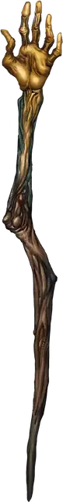

Посох иссушения
Staff of Withering
Посох, редкий (требуется настройка друидом, жрецом или колдуном)

Рекомендованная стоимость 501-5 000 зм
У этого посоха 3 заряда, и он ежедневно восстанавливает 1к3 заряда на рассвете.
Этот посох можно использовать как магический боевой посох. При попадании он причиняет урон как обычный боевой посох, и вы можете потратить 1 заряд, чтобы причинить цели дополнительные 2к10 урона некротической энергией. Кроме того, цель должна преуспеть в спасброске Телосложения Сл 15, иначе она в течение 1 часа будет совершать с помехой проверки характеристик и спасброски, использующие Силу или Телосложение.